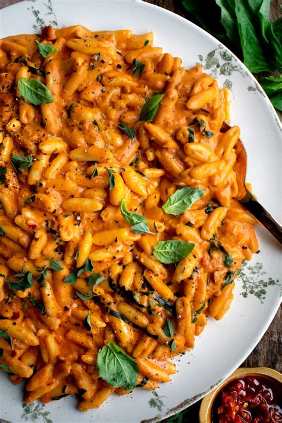
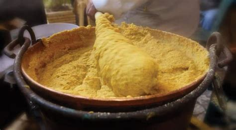
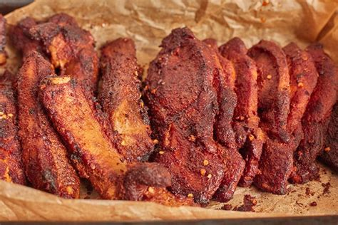
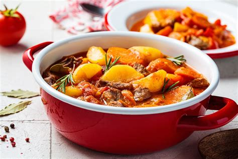
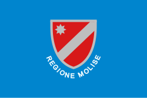

Molise
Panoramica
Molise è una delle regioni più piccole d’Italia, situata nel centro-sud del paese. Conosciuta per la sua natura incontaminata, i borghi medievali e la cultura tradizionale, offre un’esperienza autentica lontana dal turismo di massa.
Fatti in Breve
- Capoluogo: Campobasso
- Lingua: Italiano
- Popolazione: Circa 290.000
- Famosa per: Borghi, montagne, tradizioni
- Curiosità: Molise è l’unica regione italiana creata nel XX secolo!
Piatti Tipici
Cavatelli

Polenta rognosa

Pampanella

Pezzata

Luoghi Famosi
Castello Monforte

Sepino

Termoli

Campitello Matese

Santuario dell’Addolorata

Quando Visitare
Primavera ed estate sono ideali per visitare Molise grazie al clima mite e ai numerosi festival tradizionali. L’autunno offre paesaggi suggestivi e sapori stagionali. In inverno è possibile praticare sport invernali nelle zone montane.
Simboli Regionali
- Bandiera: 
- Stemma: